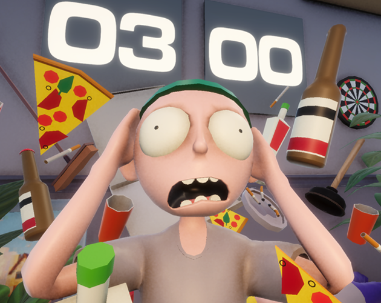

GMTK Game Jam 2026 · Game Jam
After AfterParty
Top 1% EnjoymentFirst-person party-cleanup game where you race a 3-minute countdown to clean trash, find tools, hide friends, and fix the house before your parents return—built for the GMTK 2026 theme "Countdown".
- Role
- Gameplay Programmer (core mechanics)
- Timeline
- 96 hours
- Team Size
- 4 (3 developers + 1 artist)

Project highlight
Hit the right scope balance early: roughly 30% of the jam on locking core mechanics and 70% on polishing feel, readability, and presentation. That split helped the game land in the top 1% by Enjoyment at GMTK Game Jam 2026.
What I built
- Owned the core gameplay mechanics as one of three developers on the jam team.
- Built interaction systems for the house’s cleanup activities—tools, messes, and other interactables that drive the loop.
- Implemented ragdoll behavior for characters in the cleanup fantasy.
- Authored all animations, plus shaders and VFX that sell the mess and polish.
- Produced the screenshots and GIFs used on the itch.io game page.
Challenges
- Protecting polish time by keeping the mechanic set deliberately small—enough comedy and agency for a house cleanup fantasy, not so much that the last days became feature crunch.
Results & impact
- Published playable jam build on itch.io for GMTK Game Jam 2026 (web + Windows).
- Reached the top 1% of entries by Enjoyment.